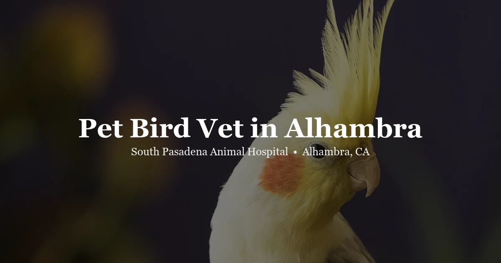

May 4, 2026 · 7 min read
Pet Bird Vet in Alhambra — Signs Your Bird Needs a Checkup

Birds are extraordinary at pretending to be fine. It's not a personality quirk — it's a survival mechanism. In the wild, showing weakness attracts predators. So birds have evolved to mask illness until they physically can't anymore. By the time your parrot or cockatiel looks sick, it has often been sick for days or weeks already.
This is probably the single most important thing for bird owners to understand about avian health. And it's why we take bird wellness visits seriously at South Pasadena Animal Hospital in Alhambra. Annual exams catch what you can't see. Here's what to know.
Signs your bird needs a vet — don't wait on these
There's a difference between "monitor this" and "come in today." For birds, the window between those two options is shorter than it is for dogs and cats. If you see any of the following, call us at (626) 441-1314 rather than searching for answers online:
Fluffed feathers sustained throughout the day — normal birds fluff briefly when cold or resting, but staying fluffed for hours means something is wrong. Tail bobbing at rest means the bird is working harder to breathe than it should; respiratory distress in birds escalates fast. Sitting on the cage floor when not actively eating or engaged is a same-day visit. Changes in droppings — color, consistency, volume; watery or discolored urates, or significantly less output. Discharge from the nares or eyes. A normally chatty bird going quiet. Not eating or drinking for 24 hours — birds have fast metabolisms and decline quickly without food.
Here's the thing about bird emergencies: they often don't look like emergencies until they're true emergencies. The earlier you call, the better the outcome.
Why annual wellness exams matter for birds
Most bird owners don't bring their birds in until something is obviously wrong. We understand why — birds often seem fine, and finding avian care isn't always easy. But the problem with waiting is that birds are so good at masking illness that "obviously wrong" often means "critically ill."
An annual wellness exam catches problems before they reach that point. We check:
- Weight. Weight loss is one of the most reliable early indicators of illness in birds, and many owners can't detect it by looking. We weigh every bird at every visit. A significant drop from the previous visit gets investigated.
- Feather condition. Stress bars (horizontal lines on feathers indicating malnutrition or illness during a feather's growth), barbering, abnormal molting patterns, or feather quality issues tell us a lot.
- Beak, nails, and choanal slit. Overgrown beaks or nails can point to underlying disease. The choanal slit (the opening in the roof of the mouth) shows signs of respiratory or nutritional problems when inflamed. We also provide avian beak trims for birds needing routine maintenance between visits.
- Crop and abdomen. A palpable crop, enlarged abdomen, or unusual firmness warrants further workup.
- Behavior and mental state. We ask about changes in vocalization, interaction, activity level, and routine. Behavioral changes often precede physical symptoms.
We also use wellness visits to review diet and husbandry. Poor nutrition is one of the most common contributors to bird health problems — especially an all-seed diet, which is the dietary equivalent of a human eating only crackers. Most companion birds do much better on a formulated pellet base with fresh vegetables added in.
Common health problems we see in pet birds
Respiratory infections
Respiratory illness is one of the most common reasons bird owners bring their birds in. Signs include tail bobbing, open-mouth breathing, nasal discharge, clicking or wheezing sounds, or a change in voice. Causes range from bacterial and fungal infections (Aspergillus is a particularly serious one) to chlamydiosis (psittacosis), which is also transmissible to humans. Respiratory problems in birds need diagnosis and treatment — they don't clear up on their own.
Nutritional deficiencies
Vitamin A deficiency is extremely common in birds fed primarily seeds. It causes problems with the skin, respiratory tract, eyes, kidneys, and reproductive system. You often can't see it until organ systems start failing. Switching to a quality pellet-based diet fixes this over time, but the transition takes work — birds are creatures of habit and resist dietary changes. We can help you navigate the switch without stressing your bird out.
Feather-destructive behavior
Feather plucking or chewing is one of the more frustrating conditions in parrots. It can be behavioral (boredom, stress, inadequate social interaction) or medical (skin infection, internal parasites, PBFD, systemic illness). Distinguishing between those causes requires an exam and sometimes bloodwork. A bird that's pulling its own feathers needs to be seen — leaving it alone rarely improves things and often makes it worse.
Psittacine Beak and Feather Disease (PBFD)
PBFD is a viral disease affecting parrots and other psittacines. It causes feather abnormalities, beak deformities, and immune suppression. There's no cure, but knowing a bird has it changes how you manage its care and housing (especially if you have other birds). Testing is straightforward.
Egg binding in females
Female birds can become egg-bound — the egg gets stuck and the bird can't pass it. This is a genuine emergency. Signs include straining, sitting on the floor, swollen abdomen, and extreme lethargy. If you suspect egg binding, call us immediately — this condition can be fatal within hours without treatment.
What birds we see at SPAH
We see companion birds as part of our exotic animal practice. That includes:
- Parrots — African Greys, Amazon parrots, Macaws, Eclectus, Caiques
- Cockatiels and cockatoos
- Conures (Green Cheek, Sun, Nanday, Jenday)
- Lovebirds and parrotlets
- Budgerigars (budgies)
- Canaries and finches
- Doves and pigeons
Not sure if we can see your specific bird? Call (626) 441-1314 and we'll give you a direct answer. Our bird vet page also has more information about what avian visits at SPAH look like.
What to bring to a bird vet visit
A few things help us help your bird better:
- Bring a fresh droppings sample if possible — from the last 12–24 hours on clean paper towel. We can learn a lot from fecal analysis.
- Write down what your bird eats — seeds, pellets, fruits, vegetables, any treats, and approximate quantities. Diet is that important.
- Note any behavioral changes — when they started, how gradual or sudden, and what changed in the environment around the same time.
- Transport in a familiar carrier or travel cage. Cover it partially to reduce visual stress during the drive. Stress during transport can worsen a sick bird's condition, so a calm, covered carrier helps.
Questions about bird vet care
How do I know if my bird needs to see a vet?
Fluffed feathers sustained for hours, tail bobbing at rest, sitting on the cage floor, changes in droppings, discharge from the eyes or nares, going quiet, or not eating for 24 hours — any of these warrants a call to us. Birds hide illness well; don't wait to see if it resolves on its own.
How often should I bring my bird in for a checkup?
We recommend annual wellness exams for companion birds. Given how well birds mask illness, a yearly physical is the most reliable way to catch problems early. We weigh every bird at every visit — weight trends over time tell us a lot.
Does SPAH see parrots and exotic birds in Alhambra?
Yes. We see parrots, cockatiels, conures, lovebirds, budgies, finches, doves, and other companion species at our clinic at 3116 W Main St in Alhambra. Call (626) 441-1314 or visit our bird vet page for details.
What causes feather plucking in parrots?
Feather plucking can be medical (skin infection, PBFD, nutritional deficiency, internal parasites, systemic illness) or behavioral (boredom, stress, inadequate social enrichment). A vet exam — and sometimes bloodwork — distinguishes between them. Don't assume it's purely behavioral without ruling out a medical cause first.
Is PBFD curable?
There is currently no cure for PBFD (Psittacine Beak and Feather Disease). Management focuses on supportive care, nutrition, and preventing transmission to other birds. Testing is recommended for any new bird entering a household with other psittacines, or for birds showing feather abnormalities.